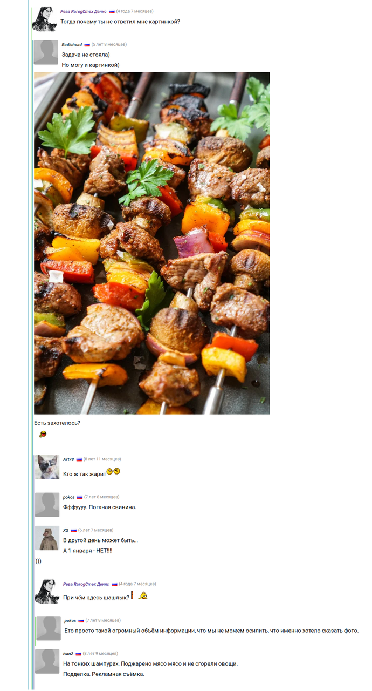

Фотографии не являются универсальным языком
В комментариях на Афтершоке к статье Почему инстаграм популярен? (ссылка ведёт на АШ) обнаружилось заблуждение, что фотографии являются универсальным языком. Главная мысль — нет, изображения не являются языком. Дальше будет такое рассуждение, которое заставило удивиться меня самого[1].
- 1
-
Откуда я, мать его, это знаю?
Изображения не являются денотатом (от лат. denoto — обозначаю) сами по себе, и последовательность изображений не обладает синтаксисом. Здесь под денотатом подразумевается свойство слова обозначать предмет. Изображение может стать денотатом, будучи встроено в существующее речевое или письменное предложение (пример - ребусы); но это редкость. Обычно изображение используется для иллюстрации, оно зрительным ассоциативным рядом (цепочкой мыслей-ассоциаций) дополняет сказанное (написанное).
Разберу это отличие на примере картины художницы Wlop 23 tiny wishes (ссылка ведёт на девиантарт).
Что она выражает?
А сейчас внимательно смотрите, как будет дополняться Ваше видение картины, когда я буду добавлять слова. Картина называется «23 крохотных желания». На картине изображены персонажи видеоигры Crisis Core: Final Fantasy VII (2008) Зак (анг. Zack) и Айрис (англ. Aerith). Игра является логическим приквелом Final Fantasy VII (1997).
Те читатели, которые играли в Final Fantasy VII, знают Айрис, и наверняка по ассоциации вспомнили Клауда; Зак же являлся близким другом Клауда, умирает в конце игры Crisis Core, и в момент смерти передаёт часть сил Клауду вместе с здоровенным мечом в правой части картины и с воспоминаниями (и часть воспоминаний Клауда, связанных с Айрис, принадлежит Заку). Таким образом, пара Зак-Айрис более канонична.
А вот кто не знаком с Final Fantasy VII уже почувствовали, что 2 неуклюжих абзаца выше принципиально отличаются от картины, и они несут речевой смысл (из картины же можно извлечь только эмоции).
Ну и бонусом совсем наглядно по дискуссии с АШ из той же статьи Почему инстаграм популярен?. Ссылка на начало ветки.
Да, эта статья не обладает научной точностью. Желающим копнуть глубже я настоятельно рекомендую узнать подробности в книге Б.Ф. Поршнева «О начале человеческой истории» 2007 года под редакцией Диденко.